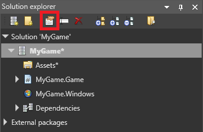

シェーダーのコンパイル
初級 プログラマー
Stride は、Stride シェーダーファイル（sdsl および .sdfx）を、グラフィックスプラットフォームで使用されるシェーダー言語に変換します。
| プラットフォーム | シェーダー言語 |
|---|---|
| Direct3D | HLSL |
| OpenGL | GLSL |
| Vulkan | SPIR-V |
| iOS | OpenGL ES |
Stride では、実行時（ゲームが実行されている時）またはビルド時（エディタがゲームアセットをビルドする時）に、シェーダーを変換することができます。Stride が実行時にシェーダーを生成すると、シェーダーがコンパイルされるまでレンダリングが停止します。これは通常、リリースビルドでは避けたいことです。特にモバイルプラットフォームでは CPU パワーが少ないため、停止がより目立ってしまいます。
Stride が実行時にシェーダーを変換する方法
Stride は、実行時にどのシェーダーが使用されるかを事前に知ることができません。これは、ユーザーがマテリアルのパラメーターを変更したり、スクリプトからポストエフェクトのパラメーターを変更したりすることで、新しいシェーダーの組み合わせを生成する可能性があるからです。また、最終的なシェーダーは、実行プラットフォームのグラフィックス機能に依存します。
Stride は、実行時に新しいシェーダーが必要になると、データベースをチェックして、シェーダーがすでに変換済みであるかどうかを確認します。シェーダーがデータベースにあれば、Stride はそれを使用します。
シェーダーがまだ変換されていない場合、Stride はパッケージのユーザー設定（下記参照）に応じて、ローカル（デバイス上）またはリモート（Game Studio を使用）でシェーダーをコンパイルします。
パッケージのユーザー設定（下記参照）で Record used effects が有効になっている場合、Stride は新しいシェーダーが必要であることを Game Studio に通知します。
Game Studio は、インポートすべき新しいシェーダーがあることをユーザーに通知します。

アセットビューで、[Import Effects] ボタンが有効化されます。
[Import Effects] ボタンをクリックすると、Game Studio は エフェクトロクを更新（存在しない場合は作成）し、ゲームのデータベースに追加して、それを次回のビルド時に使用します（1. 参照）。

シェーダーのコンパイル方法を変更する
Game Studio のソリューションエクスプローラーで、パッケージを選択し、[Package properties] をクリックします。

プロパティグリッドで、ユーザー設定プロパティを設定します。
Effect Compiler プロパティでは、シェーダーのコンパイル方法を指定します。
Local: デバイス上でシェーダーを変換します。これは、ゲームのリリースバージョンで推奨されます。
Remote: 開発機でシェーダーを変換します。ゲームのリリースバージョンでこれを使う理由はありません。開発機に接続できないからです。
LocalOrRemote: 開発機でシェーダーを変換しますが、失敗した場合はデバイス上で変換を試みます。Remote と同様に、ゲームのリリースバージョンには使用できません。
None: シェーダーを変換しません。データベースにないシェーダーを要求すると、アプリケーションがクラッシュしますのでご注意ください。現在のところ、この機能を使ってもアプリケーションのサイズを節約できることはないので、使用するメリットはありません。しかし、データベースにすべてのシェーダーが入っていることを確認するには便利かもしれません。ゲームがクラッシュした場合、データベースに少なくとも1つのシェーダーが欠けていることがわかるためです。
Record used effects を有効にすると、Game Studio は、新しいシェーダーが必要になった時点でエフェクトログに追加します。ゲームのリリースバージョンでは開発機には接続できないため、これを無効にすることをお勧めします。
iOS 向け開発においてリモートでシェーダーをコンパイルする
iOS デバイスは PC に直接接続できないため、iOS 向けの開発では Stride シェーダーをリモートで変換する必要があります。ここで、iOS デバイス、Mac、開発用 PC 間の連携のために、Python スクリプトを使う必要があります。
PC と Mac が同じネットワークに接続されていることを確認してください。
Mac に Python をインストールします。Pythonは、Python 公式サイトからダウンロードできます。
ios-tcreplay.zip をダウンロードして、解凍します。
ターミナルを開き、ファイルを解凍したフォルダに移動して、
stride-ios-relay.py MyPcName（MyPcNameは開発 PC の名前）を実行します。Tip
開発 PC の名前を調べるには、PC 上で Windows キーを押し、About と入力して Enter キーを押します。PC の名前はデバイス名として表示されます。
これで、iOS デバイスが Mac を介して PC と通信し、リモートでシェーダーを構築できるようになったはずです。
エラーメッセージ
アプリケーションが、シェーダーをコンパイルするため、または新しいシェーダーが必要であることを通知するために Game Studio に接続しようとして失敗した場合、Visual Studio の出力に次のエラーが表示されます。
「[RouterClient]: エラーが発生しました。モード Connect を使用してコネクションルーターに接続できませんでした。System.AggregateException: 1つ以上のエラーが発生しました。---> System.Net.Sockets.SocketException: ターゲットマシンが 127.0.0.1:31254 を動的に拒否したため、接続できません。」